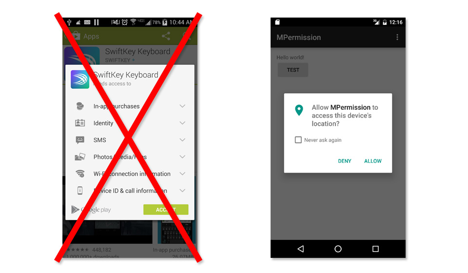
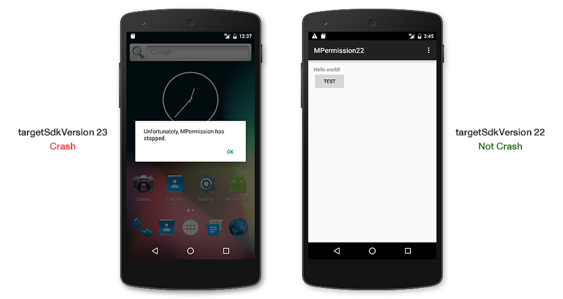
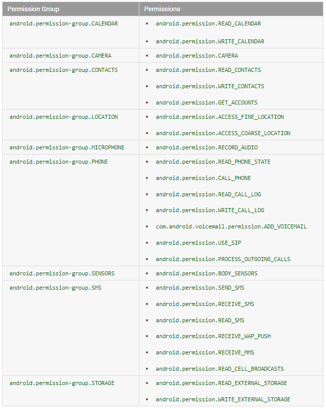
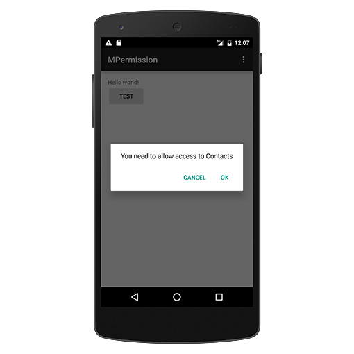

Android M 新的运行时权限开发者需要知道的一切
android M 的名字官方刚发布不久，最终正式版即将来临！
android在不断发展，最近的更新 M 非常不同，一些主要的变化例如运行时权限将有颠覆性影响。惊讶的是android社区鲜有谈论这事儿，尽管这事很重要或许在不远的将来会引发很严重的问题。
这是今天我写这篇博客的原因。这里有一切关于android运行时权限你需要知道的，包括如何在代码中实现。现在亡羊补牢还不晚。
新运行时权限
android的权限系统一直是首要的安全概念，因为这些权限只在安装的时候被询问一次。一旦安装了，app可以在用户毫不知晓的情况下访问权限内的所有东西。
难怪一些坏蛋利用这个缺陷恶意收集用户数据用来做坏事了！
android小组也知道这事儿。7年了！权限系统终于被重新设计了。在android6.0棉花糖，app将不会在安装的时候授予权限。取而代之的是，app不得不在运行时一个一个询问用户授予权限。

注意权限询问对话框不会自己弹出来。开发者不得不自己调用。如果开发者要调用的一些函数需要某权限而用户又拒绝授权的话，函数将抛出异常直接导致程序崩溃。

另外，用户也可以随时在设置里取消已经授权的权限。

或许已经感觉到背后生出一阵寒意。。。如果你是个android开发者，意味着要完全改变你的程序逻辑。你不能像以前那样直接调用方法了，你不得不为每个需要的地方检察权限，否则app就崩溃了！
是的。我不能哄你说这是简单的事儿。尽管这对用户来说是好事，但是对开发者来说就是噩梦。我们不得不修改编码不然不论短期还是长远来看都是潜在的问题。
这个新的运行时权限仅当我们设置targetSdkVersion to 23（这意味着你已经在23上测试通过了）才起作用，当然还要是M系统的手机。app在6.0之前的设备依然使用旧的权限系统。
已经发布了的app会发生什么
新运行时权限可能已经让你开始恐慌了。“hey，伙计！我三年前发布的app可咋整呢。如果他被装到android 6.0上，我的app会崩溃吗？！？”
莫慌张，放轻松。android小队又不傻，肯定考虑到了这情况。如果app的targetSdkVersion 低于 23，那将被认为app没有用23新权限测试过，那将被继续使用旧有规则：用户在安装的时候不得不接受所有权限，安装后app就有了那些权限咯！
然后app像以前一样奔跑！注意，此时用户依然可以取消已经同意的授权！用户取消授权时，android 6.0系统会警告，但这不妨碍用户取消授权。
问题又来了，这时候你的app崩溃吗？
善意的主把这事也告诉了android小组，当我们在targetSdkVersion 低于23的app调用一个需要权限的函数时，这个权限如果被用户取消授权了的话，不抛出异常。但是他将啥都不干，结果导致函数返回值是null或者0.

别高兴的太早。尽管app不会调用这个函数时崩溃，返回值null或者0可能接下来依然导致崩溃。
好消息（至少目前看来）是这类取消权限的情况比较少，我相信很少用户这么搞。如果他们这么办了，后果自负咯。
但从长远看来，我相信还是会有大量用户会关闭一些权限。我们app不能在新设备完美运行这是不可接受的。
怎样让他完美运行呢，你最好修改代码支持最新的权限系统，而且我建议你立刻着手搞起！
代码没有成功改为支持最新运行时权限的app,不要设置targetSdkVersion 23 发布，否则你就有麻烦了。只有当你测试过了，再改为targetSdkVersion 23 。
警告：现在你在android studio新建项目，targetSdkVersion 会自动设置为 23。如果你还没支持新运行时权限，我建议你首先把targetSdkVersion 降级到22
PROTECTION_NORMAL类权限
当用户安装或更新应用时，系统将授予应用所请求的属于 PROTECTION_NORMAL 的所有权限（安装时授权的一类基本权限）。这类权限包括：
android.permission.ACCESS_LOCATION_EXTRA_COMMANDS
android.permission.ACCESS_NETWORK_STATE
android.permission.ACCESS_NOTIFICATION_POLICY
android.permission.ACCESS_WIFI_STATE
android.permission.ACCESS_WIMAX_STATE
android.permission.BLUETOOTH
android.permission.BLUETOOTH_ADMIN
android.permission.BROADCAST_STICKY
android.permission.CHANGE_NETWORK_STATE
android.permission.CHANGE_WIFI_MULTICAST_STATE
android.permission.CHANGE_WIFI_STATE
android.permission.CHANGE_WIMAX_STATE
android.permission.DISABLE_KEYGUARD
android.permission.EXPAND_STATUS_BAR
android.permission.FLASHLIGHT
android.permission.GET_ACCOUNTS
android.permission.GET_PACKAGE_SIZE
android.permission.INTERNET
android.permission.KILL_BACKGROUND_PROCESSES
android.permission.MODIFY_AUDIO_SETTINGS
android.permission.NFC
android.permission.READ_SYNC_SETTINGS
android.permission.READ_SYNC_STATS
android.permission.RECEIVE_BOOT_COMPLETED
android.permission.REORDER_TASKS
android.permission.REQUEST_INSTALL_PACKAGES
android.permission.SET_TIME_ZONE
android.permission.SET_WALLPAPER
android.permission.SET_WALLPAPER_HINTS
android.permission.SUBSCRIBED_FEEDS_READ
android.permission.TRANSMIT_IR
android.permission.USE_FINGERPRINT
android.permission.VIBRATE
android.permission.WAKE_LOCK
android.permission.WRITE_SYNC_SETTINGS
com.android.alarm.permission.SET_ALARM
com.android.launcher.permission.INSTALL_SHORTCUT
com.android.launcher.permission.UNINSTALL_SHORTCUT
只需要在AndroidManifest.xml中简单声明这些权限就好，安装时就授权。不需要每次使用时都检查权限，而且用户不能取消以上授权。
让你的app支持新运行时权限
是时候让我们的app支持新权限模型了，从设置compileSdkVersion and targetSdkVersion为23开始吧.
android {
compileSdkVersion 23
...
defaultConfig {
...
targetSdkVersion 23
...
}
例子，我想用以下方法添加联系人。
private static final String TAG = "Contacts";
private void insertDummyContact() {
// Two operations are needed to insert a new contact.
ArrayList<ContentProviderOperation> operations = new ArrayList<ContentProviderOperation>(2);
// First, set up a new raw contact.
ContentProviderOperation.Builder op =
ContentProviderOperation.newInsert(ContactsContract.RawContacts.CONTENT_URI)
.withValue(ContactsContract.RawContacts.ACCOUNT_TYPE, null)
.withValue(ContactsContract.RawContacts.ACCOUNT_NAME, null);
operations.add(op.build());
// Next, set the name for the contact.
op = ContentProviderOperation.newInsert(ContactsContract.Data.CONTENT_URI)
.withValueBackReference(ContactsContract.Data.RAW_CONTACT_ID, 0)
.withValue(ContactsContract.Data.MIMETYPE,
ContactsContract.CommonDataKinds.StructuredName.CONTENT_ITEM_TYPE)
.withValue(ContactsContract.CommonDataKinds.StructuredName.DISPLAY_NAME,
"__DUMMY CONTACT from runtime permissions sample");
operations.add(op.build());
// Apply the operations.
ContentResolver resolver = getContentResolver();
try {
resolver.applyBatch(ContactsContract.AUTHORITY, operations);
} catch (RemoteException e) {
Log.d(TAG, "Could not add a new contact: " + e.getMessage());
} catch (OperationApplicationException e) {
Log.d(TAG, "Could not add a new contact: " + e.getMessage());
}
}
上面代码需要WRITE_CONTACTS权限。如果不询问授权，app就崩了。
下一步像以前一样在AndroidManifest.xml添加声明权限。
<uses-permission android:name="android.permission.WRITE_CONTACTS"/>
下一步，不得不再写个方法检查有没有权限。如果没有弹个对话框询问用户授权。然后你才可以下一步创建联系人。
权限被分组了，如下表：

同一组的任何一个权限被授权了，其他权限也自动被授权。例如，一旦WRITE_CONTACTS被授权了，app也有READ_CONTACTS和GET_ACCOUNTS权限了。
源码中被用来检查和请求权限的方法分别是Activity的checkSelfPermission和requestPermissions。这些方法在api23引入。
inal private int REQUEST_CODE_ASK_PERMISSIONS = 123;
private void insertDummyContactWrapper() {
int hasWriteContactsPermission = checkSelfPermission(Manifest.permission.WRITE_CONTACTS);
if (hasWriteContactsPermission != PackageManager.PERMISSION_GRANTED) {
requestPermissions(new String[] {Manifest.permission.WRITE_CONTACTS},
REQUEST_CODE_ASK_PERMISSIONS);
return;
}
insertDummyContact();
}
如果已有权限，insertDummyContact()会执行。否则，requestPermissions被执行来弹出请求授权对话框，如下：

不论用户同意还是拒绝，activity的onRequestPermissionsResult会被回调来通知结果（通过第三个参数），grantResults,如下：
@Override
public void onRequestPermissionsResult(int requestCode,
String[] permissions, int[] grantResults) {
switch (requestCode) {
case REQUEST_CODE_ASK_PERMISSIONS:
if (grantResults[0] == PackageManager.PERMISSION_GRANTED) {
// Permission Granted
insertDummyContact();
} else {
// Permission Denied
Toast.makeText(MainActivity.this,
"WRITE_CONTACTS Denied", Toast.LENGTH_SHORT)
.show();
}
break;
default:
super.onRequestPermissionsResult(requestCode,
permissions, grantResults);
}
}
这就是新权限模型工作过程。代码真复杂但是只能去习惯它。。。为了让app很好兼容新权限模型，你不得不用以上类似方法处理所有需要的情况。
如果你想捶墙，现在是时候了。。。
处理 “不再提醒”
如果用户拒绝某授权。下一次弹框，用户会有一个“不再提醒”的选项的来防止app以后继续请求授权。
如果这个选项在拒绝授权前被用户勾选了。下次为这个权限请求requestPermissions时，对话框就不弹出来了，结果就是，app啥都不干。
这将是很差的用户体验，用户做了操作却得不到响应。这种情况需要好好处理一下。在请求requestPermissions前，我们通过activity的shouldShowRequestPermissionRationale方法来检查是否需要弹出请求权限的提示对话框，代码如下：
final private int REQUEST_CODE_ASK_PERMISSIONS = 123;
private void insertDummyContactWrapper() {
int hasWriteContactsPermission =
checkSelfPermission(Manifest.permission.WRITE_CONTACTS);
if (hasWriteContactsPermission != PackageManager.PERMISSION_GRANTED) {
if (!shouldShowRequestPermissionRationale(Manifest.permission.WRITE_CONTACTS)) {
showMessageOKCancel("You need to allow access to Contacts",
new DialogInterface.OnClickListener() {
@Override
public void onClick(DialogInterface dialog, int which) {
requestPermissions(
new String[]{Manifest.permission.WRITE_CONTACTS},
REQUEST_CODE_ASK_PERMISSIONS);
}
});
return;
}
requestPermissions(new String[] {Manifest.permission.WRITE_CONTACTS},
REQUEST_CODE_ASK_PERMISSIONS);
return;
}
insertDummyContact();
}
private void showMessageOKCancel(String message,
DialogInterface.OnClickListener okListener) {
new AlertDialog.Builder(MainActivity.this)
.setMessage(message)
.setPositiveButton("OK", okListener)
.setNegativeButton("Cancel", null)
.create()
.show();
}
当一个权限第一次被请求和用户标记过不再提醒的时候,我们写的对话框被展示。
最后一种情况，onRequestPermissionsResult会收到PERMISSION_DENIED，系统询问对话框不展示。

搞定！
一次请求多个权限
当然了有时候需要好多权限，可以用上面方法一次请求多个权限。不要忘了为每个权限检查“不再提醒”的设置。
修改后的代码：
final private int REQUEST_CODE_ASK_MULTIPLE_PERMISSIONS = 124;
private void insertDummyContactWrapper() {
List<String> permissionsNeeded = new ArrayList<String>();
final List<String> permissionsList = new ArrayList<String>();
if (!addPermission(permissionsList, Manifest.permission.ACCESS_FINE_LOCATION))
permissionsNeeded.add("GPS");
if (!addPermission(permissionsList, Manifest.permission.READ_CONTACTS))
permissionsNeeded.add("Read Contacts");
if (!addPermission(permissionsList, Manifest.permission.WRITE_CONTACTS))
permissionsNeeded.add("Write Contacts");
if (permissionsList.size() > 0) {
if (permissionsNeeded.size() > 0) {
// Need Rationale
String message = "You need to grant access to " + permissionsNeeded.get(0);
for (int i = 1; i < permissionsNeeded.size(); i++)
message = message + ", " + permissionsNeeded.get(i);
showMessageOKCancel(message,
new DialogInterface.OnClickListener() {
@Override
public void onClick(DialogInterface dialog, int which) {
requestPermissions(permissionsList.toArray(new String[permissionsList.size()]),
REQUEST_CODE_ASK_MULTIPLE_PERMISSIONS);
}
});
return;
}
requestPermissions(permissionsList.toArray(new String[permissionsList.size()]),
REQUEST_CODE_ASK_MULTIPLE_PERMISSIONS);
return;
}
insertDummyContact();
}
private boolean addPermission(List<String> permissionsList, String permission) {
if (checkSelfPermission(permission) != PackageManager.PERMISSION_GRANTED) {
permissionsList.add(permission);
// Check for Rationale Option
if (!shouldShowRequestPermissionRationale(permission))
return false;
}
return true;
}
如果所有权限被授权，依然回调onRequestPermissionsResult，我用hashmap让代码整洁便于阅读。
@Override
public void onRequestPermissionsResult(int requestCode, String[] permissions, int[] grantResults) {
switch (requestCode) {
case REQUEST_CODE_ASK_MULTIPLE_PERMISSIONS:
{
Map<String, Integer> perms = new HashMap<String, Integer>();
// Initial
perms.put(Manifest.permission.ACCESS_FINE_LOCATION, PackageManager.PERMISSION_GRANTED);
perms.put(Manifest.permission.READ_CONTACTS, PackageManager.PERMISSION_GRANTED);
perms.put(Manifest.permission.WRITE_CONTACTS, PackageManager.PERMISSION_GRANTED);
// Fill with results
for (int i = 0; i < permissions.length; i++)
perms.put(permissions[i], grantResults[i]);
// Check for ACCESS_FINE_LOCATION
if (perms.get(Manifest.permission.ACCESS_FINE_LOCATION) == PackageManager.PERMISSION_GRANTED
&& perms.get(Manifest.permission.READ_CONTACTS) == PackageManager.PERMISSION_GRANTED
&& perms.get(Manifest.permission.WRITE_CONTACTS) == PackageManager.PERMISSION_GRANTED) {
// All Permissions Granted
insertDummyContact();
} else {
// Permission Denied
Toast.makeText(MainActivity.this, "Some Permission is Denied", Toast.LENGTH_SHORT)
.show();
}
}
break;
default:
super.onRequestPermissionsResult(requestCode, permissions, grantResults);
}
}
条件灵活的，你自己设置。有的情况，一个权限没有授权，就不可用；但是也有情况，能工作，但是表现的是有所限制的。对于这个我不做评价，你自己设计吧。
用兼容库使代码兼容旧版
以上代码在android 6.0以上运行没问题，但是23 api之前就不行了，因为没有那些方法。
粗暴的方法是检查版本
if (Build.VERSION.SDK_INT >= 23) {
// Marshmallow+
} else {
// Pre-Marshmallow
}
但是太复杂，我建议用v4兼容库，已对这个做过兼容，用这个方法代替：
- ContextCompat.checkSelfPermission()
被授权函数返回PERMISSION_GRANTED，否则返回PERMISSION_DENIED ，在所有版本都是如此。
- ActivityCompat.requestPermissions()
这个方法在M之前版本调用，OnRequestPermissionsResultCallback 直接被调用，带着正确的 PERMISSION_GRANTED或者 PERMISSION_DENIED 。
- ActivityCompat.shouldShowRequestPermissionRationale()
在M之前版本调用，永远返回false。
用v4包的这三方法，完美兼容所有版本！这个方法需要额外的参数，Context or Activity。别的就没啥特别的了。下面是代码：
private void insertDummyContactWrapper() {
int hasWriteContactsPermission = ContextCompat.checkSelfPermission(MainActivity.this,
Manifest.permission.WRITE_CONTACTS);
if (hasWriteContactsPermission != PackageManager.PERMISSION_GRANTED) {
if (!ActivityCompat.shouldShowRequestPermissionRationale(MainActivity.this,
Manifest.permission.WRITE_CONTACTS)) {
showMessageOKCancel("You need to allow access to Contacts",
new DialogInterface.OnClickListener() {
@Override
public void onClick(DialogInterface dialog, int which) {
ActivityCompat.requestPermissions(MainActivity.this,
new String[] {Manifest.permission.WRITE_CONTACTS},
REQUEST_CODE_ASK_PERMISSIONS);
}
});
return;
}
ActivityCompat.requestPermissions(MainActivity.this,
new String[] {Manifest.permission.WRITE_CONTACTS},
REQUEST_CODE_ASK_PERMISSIONS);
return;
}
insertDummyContact();
}
后两个方法，我们也可以在Fragment中使用，用v13兼容包:FragmentCompat.requestPermissions() and
FragmentCompat.shouldShowRequestPermissionRationale()和activity效果一样。
第三方库简化代码
以上代码真尼玛复杂。为解决这事，有许多第三方库已经问世了，真66溜真有速度。我试了很多最终找到了个满意的hotchemi’s PermissionsDispatcher。
他和我上面做的一样，只是简化了代码。灵活易扩展，试一下吧。如果不满足你可以找些其他的。
如果我的app还开着呢，权限被撤销了，会发生生么
权限随时可以被撤销。
当app开着的时候被撤消了会发生什么呢？我试过了发现这时app会突然终止 terminated。app中的一切都被简单粗暴的停止了，因为terminated！对我来说这可以理解，因为系统如果允许它继续运行（没有某权限），这会召唤弗雷迪到我的噩梦里。或许更糟…
结论建议
我相信你对新权限模型已经有了清晰的认识。我相信你也意识到了问题的严峻。
但是你没得选择。新运行时权限已经在棉花糖中被使用了。我们没有退路。我们现在唯一能做的就是保证app适配新权限模型. 欣慰的是只有少数权限需要运行时权限模型。大多数常用的权限，例如，网络访问，属于Normal Permission 在安装时自动会授权，当然你要声明，以后无需检查。因此，只有少部分代码你需要修改。
两个建议：
- 1.严肃对待新权限模型
- 2.如果你代码没支持新权限，不要设置targetSdkVersion 23 。尤其是当你在Studio新建工程时，不要忘了修改！
说一下代码修改。这是大事，如果代码结构被设计的不够好，你需要一些很蛋疼的重构。每个app都要被修正。如上所说，我们没的选择。。。
列出所有你需要请求的权限所有情形，如果A被授权，B被拒绝，会发生什么。blah，blah。
祝重构顺利。把它列为你需要做的大事，从现在就开始着手做，以保证M正式发布的时候没有问题。
希望本文对你有用，快乐编码！